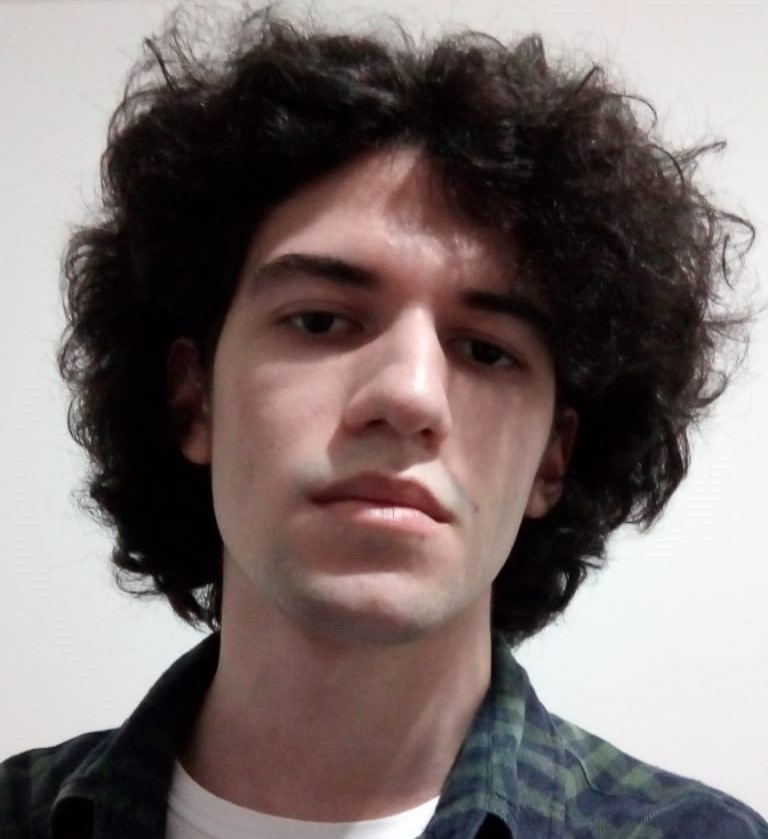

Lucas Serodio Gonçalves
Objetivo
- Adquirir novos conhecimentos e experiência profissional.
Formação
- Bacharelado em Ciência da Computação – FURB – Em curso (3º semestre | 2021/1)
- Conclusão prevista para 2024
- Bolsista de extensão durante o ano de 2020 na FURB, trabalhando num projeto que utilizava Unity e desenvolvi coisas como:
- Serialização e desserialização de arquivos JSON;
- Geração e leitura de QR code;
- Criação de interfaces gráficas e transição de telas/animação.